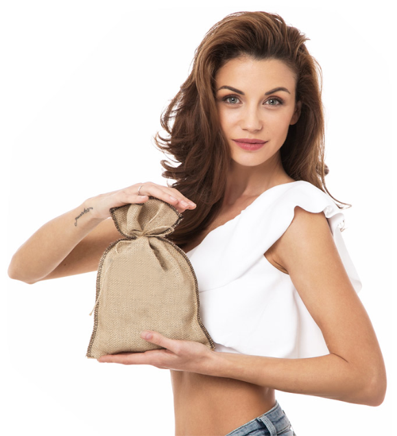
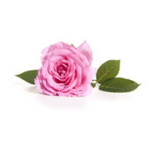
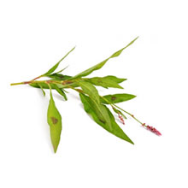
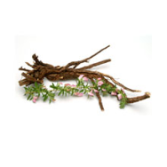
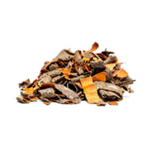
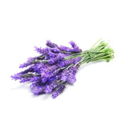

Помага на организма да се освободи от натрупаните токсини.
Спомага за усвояването на полезните вещества.
Засилва имунната система и защитава от алергии.
Ефикасен и здравословен метод за възвръщане на хармонията на тялото.
Изгаря мазнините дори в най-трудните за отслабване зони.
Подобрява храносмилянето и нормализира метаболизма.
Премахва паласките, коремните мазнини и целулита.
Без нужда от диети и тежки натоварвания.Подобрява фогурата без йо-йо ефект.

Какво има в чая?
Detox съдържа внимателно подбрани билки. Уникално комбинирани, те
действат по уникален начин върху човешкия организъм. Разглеждайки
всяка една билка поотделно ще научим какъв дар са те от природата, но
събрани заедно в точни пропорции са незаменими в борбата със затлъстяването и токсините.

BULGARIAN OIL ROSE

POLYGONUM HYDROPIPE

RESTHARROW ONONIS

BUCKTHORN RHAMNUS

LAVANDULA
BULGARIAN OIL ROSE
POLYGONUM HYDROPIPE
RESTHARROW ONONIS
BUCKTHORN RHAMNUS
LAVANDULA
За Продукта
1 опаковка Detox E подходяща за хора, които искат да изчистят организма си от токсините.
При хора без наднормено тегло чаят действа хармонизиращо на храносмилателната,
отделителната, лимфната и кръвоносната система. Чаят зарежда организма с важни витамини,
които засилват имунната система.
2 опаковки Detox са достатъчни, за да детоксикирате организма си и да дооформите талията.
Два месеца консумация на чая подобрява значително метаболните процеси.
100% натурални билки, БЕЗ ГМО съставки, НЕ съдържа глутен, НЕ съдържа
стабилизатори, НЕ съдържа консерванти.